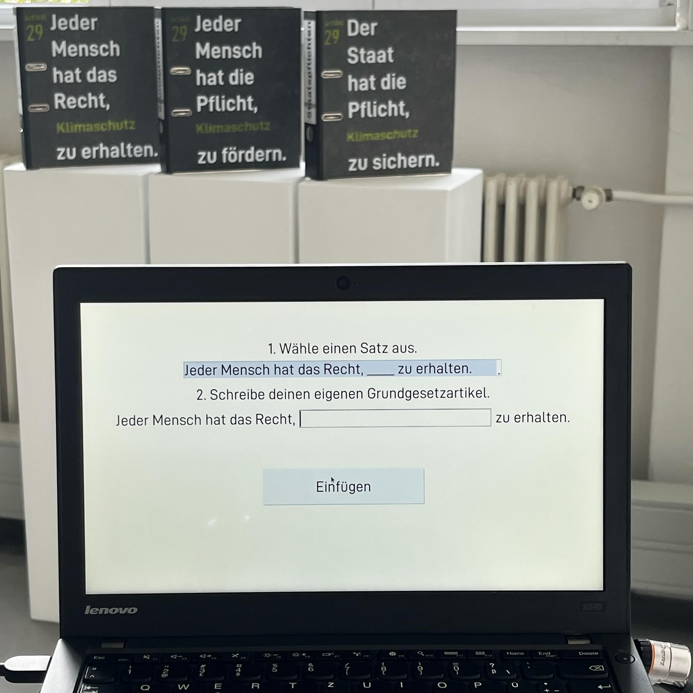
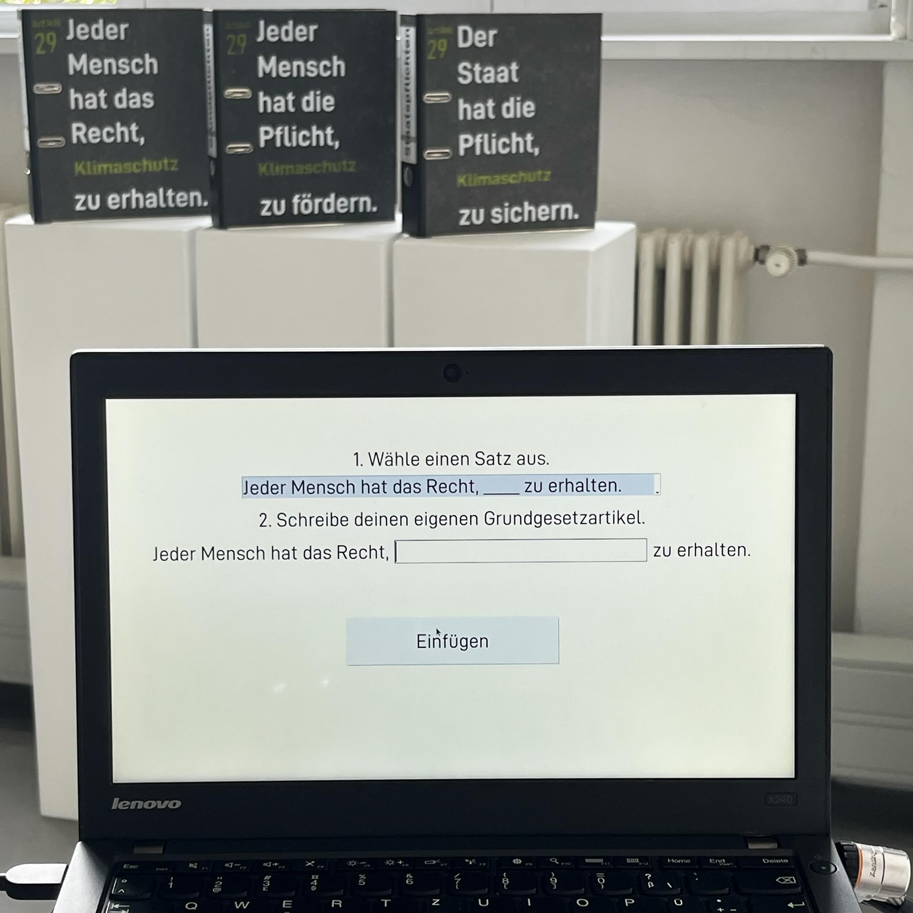
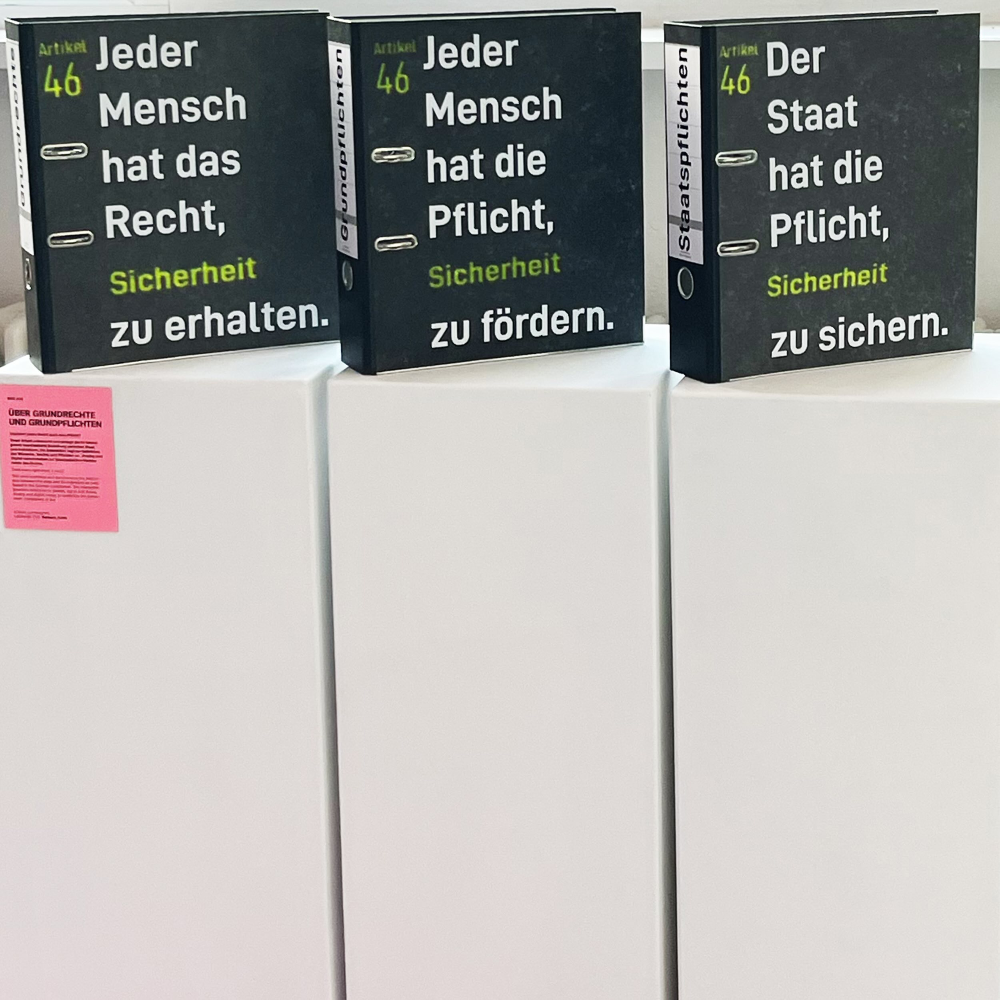
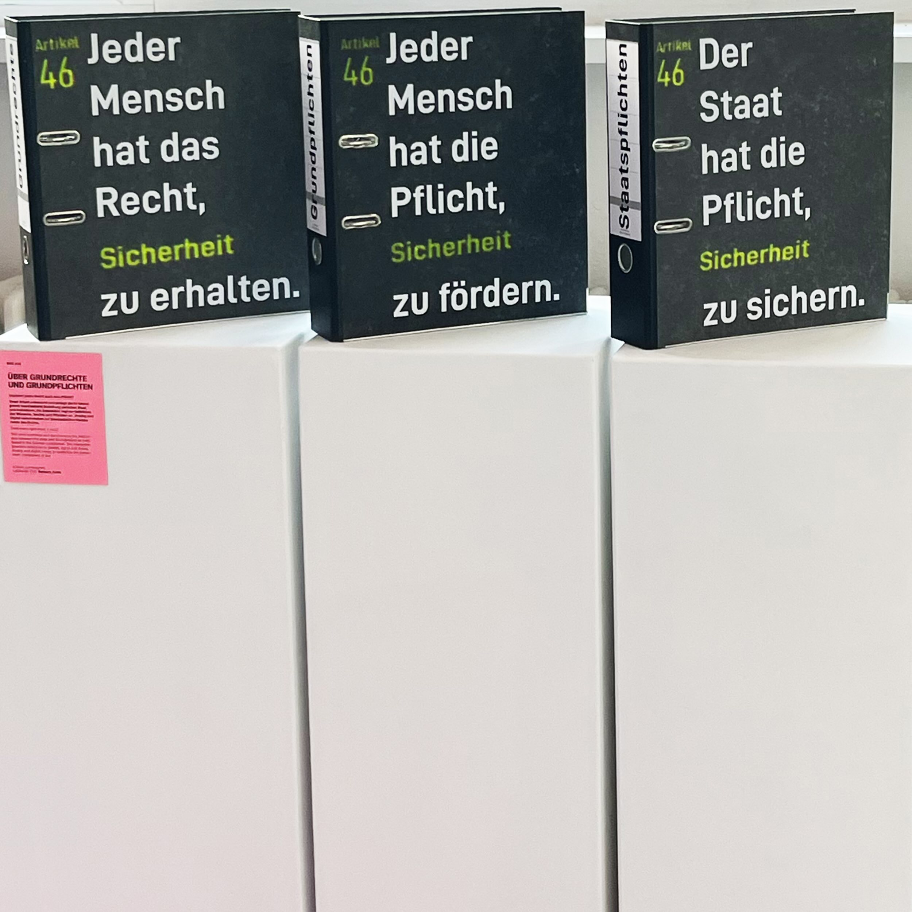

über grundrechte und grundpflichten
2024, interactive installation
Does every right imply a duty? Über Grundrechte und Grundpflichten (On fundamental rights and duties) examines and deconstructs the relationship between the state and the individual as manifested in the German constitution. The interaction provokes reflection on desires, rights and duties. Analog and digital merge to symbolize the bureaucratic component of law. The project was developed in a guest semester at Klasse Kampagnen.
 

 

On the occasion of the 75th anniversary of the German Grundgesetz (constitution), the
work "Über Grundrechte und Grundpflichten" illuminates the fine line between right and
duty. The
relationship between the state and the individual, as manifested in the Grundgesetz, is
to
be examined and broken up. The interactive elements of the work encourage participants
to reflect on and interact with their desires, rights and duties.
The use of folders
symbolizes the bureaucratic component of the law. People can use a screen to formulate
their own constitutional articles. These are projected onto the three folders.
Pre-formulated sentences are attached to the folders, which reformulate each
self-written law into a right, a duty and a state obligation and thus open up the question of the difference between those three components.